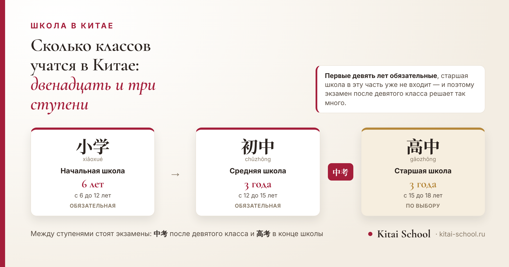
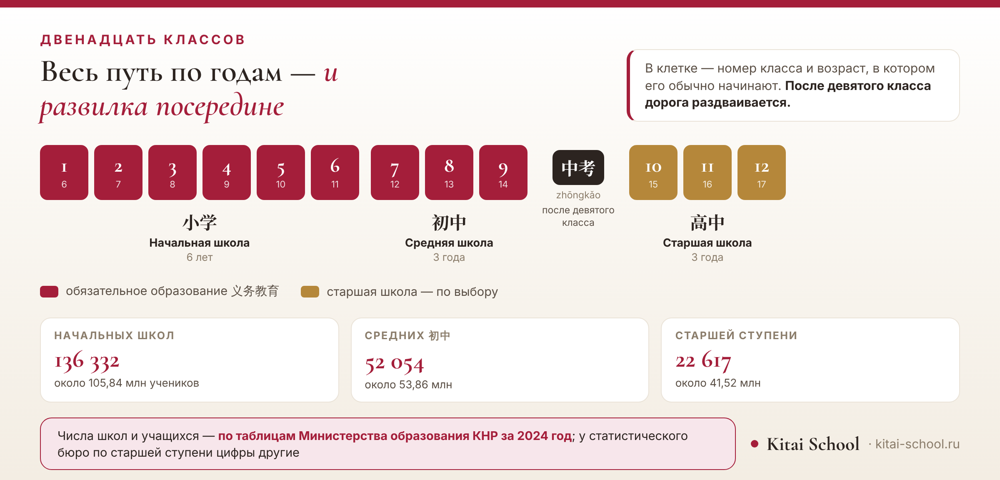

Школа в Китае
Сколько классов учатся в Китае: ступени образования и возраст школьников


Ответ короткий: двенадцать классов и три ступени. Но за этой схемой есть устройство, из-за которого вопрос и задают: обязательна в Китае только часть школы, а посередине пути стоит экзамен, после которого дети расходятся по разным дорогам. Разберём всё по годам — от первого класса до выпуска, — а в конце посмотрим, сколько в стране школ и школьников по официальной статистике.
Двенадцать классов, три ступени: начальная 小学 — шесть лет, средняя 初中 — три, старшая 高中 — ещё три. В школу идут в шесть лет, выпускаются примерно в восемнадцать. Обязательны только первые девять лет; после девятого класса стоит экзамен, и дальше путь раздваивается.
Короткий ответ: двенадцать классов и три ступени
Сначала вся схема целиком, дальше разберём по частям.
| Ступень | Чтение | Название | Сколько | Возраст | Обязательная |
|---|---|---|---|---|---|
| 小学 | xiǎoxué | Начальная школа | 6 лет | с 6 до 12 лет | да |
| 初中 | chūzhōng | Средняя школа | 3 года | с 12 до 15 лет | да |
| 高中 | gāozhōng | Старшая школа | 3 года | с 15 до 18 лет | нет |
Эту схему записывают как 6+3+3: шесть лет начальной школы, три года средней и три года старшей. В сумме — двенадцать лет, столько же, сколько в российской одиннадцатилетке плюс год.
Главное отличие от нашей школы не в числе лет, а в делении. У нас школа одна, и переход из класса в класс ничего не решает. В Китае это три разных учреждения, и между ними нужно поступать.
Со словом «класс» тут возникает путаница, и лучше снять её сразу. В китайском счёте классы нумеруются внутри ступени, а не сквозь всю школу: первый год средней школы называется первым, хотя по нашему счёту это седьмой класс. Поэтому фраза «он в первом классе» без уточнения ступени почти ничего не значит.
Второе, что сбивает: перевод «средняя школа». У нас средняя школа — это вся школа между начальной и выпуском. В Китае так называется отдельная ступень из трёх лет, после которой нужно поступать дальше. Два слова совпали, а означают разное.
И третье — сравнение с нашей одиннадцатилеткой. Двенадцать лет против одиннадцати не означает, что китайский школьник учится на год дольше по той же программе: распределение материала другое, и прямого соответствия между классами нет. Сравнивать стоит возраст, а не номер класса.
Отсюда практический вывод для тех, кто переезжает. При переводе ребёнка смотрят на возраст, а не на то, какой класс он закончил дома: по возрасту определяют ступень, а дальше уже решают вопрос с языком.
Ещё одно, что стоит понимать про деление на ступени: это чаще всего разные школы, а не разные корпуса одной. У каждой свой приём, свой директор и свой набор. Поэтому переход с одной ступени на другую в Китае называется поступлением, и к нему готовятся, а не просто переходят в следующий класс.
Из этого же следует, что школа не сопровождает ребёнка все двенадцать лет. Сменить коллектив и учителей придётся минимум дважды, и к старшей ступени класс собирается уже по результатам экзамена, а не по месту жительства.
Обратите внимание на последнюю колонку таблицы: обязательны только две ступени из трёх. Об этом — отдельный раздел ниже, потому что именно отсюда растёт всё остальное.
Возраст: с шести до восемнадцати
Теперь то же самое, но по годам — так виднее, где ребёнок окажется в каком возрасте.
Теперь разложим те же двенадцать лет по годам — так виднее, в каком возрасте ребёнок окажется на каждой ступени и где именно проходят границы между ними.
Возраст в карте ниже — это возраст на начало учебного года, а не на день рождения. Учебный год в Китае начинается осенью, поэтому дети одного класса различаются по возрасту почти на год: кто-то отметит день рождения в сентябре, кто-то в августе.
И второе, что стоит держать в голове при чтении карты: она описывает обычный путь без задержек. Второгодничество, более поздний приём и перерывы сдвигают всю цепочку, и тогда возраст на каждой ступени оказывается выше.

В школу идут в шесть лет. Эта граница задана законом об обязательном образовании: с шести полных лет ребёнок должен учиться, и отвечают за это родители.
На практике всё не так ровно: трактовки на местах расходятся, в части регионов требования смягчены, а где-то срок сдвигают. Подробный разбор с отсечками по датам у нас в отдельной статье: как учатся китайские школьники — здесь я его не пересказываю.
Дальше арифметика простая. В двенадцать лет заканчивается начальная школа и начинается средняя. В пятнадцать — конец средней и, для тех, кто идёт дальше, начало старшей. В восемнадцать — выпуск.
Эти цифры верны для того, кто пошёл в первый класс вовремя и нигде не оставался на второй год. Любой сдвиг в начале сдвигает и всё остальное — поэтому карта выше отвечает на вопрос «в каком возрасте обычно», а не «у вашего ребёнка точно».
Где заканчивается обязательная часть
Вот место, которое объясняет в китайской школе почти всё.
Обязательное образование — девять лет: начальная и средняя школа вместе. По-китайски это 义务教育, и слово здесь означает именно обязанность — не право и не возможность, а обязанность родителей.
Старшая школа в эти девять лет не входит. Она не обязательна, и попасть в неё можно не автоматически: нужно сдать экзамен и пройти по результатам.
Отсюда и вся напряжённость вокруг девятого класса, которая со стороны выглядит непонятной. У нас после девятого можно спокойно остаться в школе; в Китае это момент, когда решается, останешься ли.
Ещё одно следствие, менее очевидное. Место в школе на обязательной ступени государство обязано обеспечить — и обычно поблизости от места регистрации семьи. А вот место в старшей школе никто не гарантирует.
Родители ученицы собирались переезжать в Китай и пришли с вопросом, который казался им простым: в какой класс пойдёт дочь. Девочке двенадцать, в России она заканчивала шестой.
По карте всё сошлось быстро: двенадцать лет — это конец начальной школы и переход в среднюю, то есть по возрасту она попадала в первый год 初中.
А дальше выяснилось главное. Китайского у неё не было вовсе, а все предметы идут на китайском: математика, история, биология. По возрасту класс подходил, по языку — нет.
Мы сели считать не классы, а месяцы: сколько времени остаётся до переезда и что за него можно успеть. Вышло, что к школьной программе за это время не подготовиться, зато можно дойти до уровня, на котором ребёнок понимает учителя и не теряет год впустую.
С тех пор на вопрос «в какой класс» я отвечаю двумя предложениями. Первое — про возраст. Второе — про язык, и оно важнее.
Эта история про то, зачем вообще нужна возрастная карта. Она отвечает на вопрос «куда по годам» — и только на него. Второй вопрос, «справится ли ребёнок», решается не схемой, а языком, и решать его нужно заранее.
Если переезд с детьми только обсуждается, посмотрите заодно, как устроен школьный быт: правила в китайских школах. Распорядок и требования отличаются от привычных сильнее, чем число классов.
Что не укладывается в общую схему
Прежде чем идти дальше, оговорю исключения: схема 6+3+3 основная, но не единственная.
Первое: регионы. Встречается деление, где начальная школа длится пять лет, а средняя — четыре. Сумма та же, девять лет обязательного образования, а внутреннее деление другое.
Второе: профессиональная дорога. Те, кто после девятого класса уходит в профобразование, учатся по другой программе и к 高考 не идут. В общую схему они укладываются по годам, но не по содержанию.
Третье: дошкольная ступень. Детский сад 幼儿园 в школьные двенадцать лет не входит и обязательным не считается, хотя проходит через него большинство. Как он устроен, у нас разобрано отдельно: детские сады в Китае.
Экзамен посередине пути
Вернёмся к развилке, которую видно на карте, — к экзамену после девятого класса.
中考 (zhōngkǎo) сдают после девятого класса. По его результатам распределяют дальше: в обычную старшую школу или в профессиональное образование.
Смысл у него поэтому другой, чем у школьных экзаменов, к которым мы привыкли. Он решает не «в какой класс», а по какой дороге человек пойдёт дальше, и этот выбор делается в пятнадцать лет.
Про вторую дорогу — профессиональное образование — у нас есть отдельный разбор: есть ли в Китае колледжи. Там же про то, чем китайский колледж отличается от университета и можно ли туда поступить иностранцу.
Второй экзамен, 高考, стоит в самом конце и открывает дорогу в вузы. Его разбирать здесь я не буду: он заслуживает отдельного разговора, и подробности у нас собраны в статье про школы: факты о китайских школах.
И для российских читателей отдельная оговорка: к иностранным абитуриентам эти экзамены отношения не имеют — поступление идёт по своей линии приёма.
Сколько в Китае школ и школьников
Раз уж речь о системе целиком, посмотрим на её размер.
| Ступень | Школ | Учащихся |
|---|---|---|
| Начальные школы | 136 332 | около 105,84 млн |
| Средние школы 初中 | 52 054 | около 53,86 млн |
| Старшая ступень целиком | 22 617 | около 41,52 млн |
В старшую ступень здесь входят и обычные старшие школы, и профессиональные: 15 755 и 6 862 соответственно. Из сорока с лишним миллионов учащихся около 29 миллионов приходится на обычную старшую школу и около 12 — на профобразование.
Теперь честная оговорка, без которой эти цифры подавать нельзя. У статистического бюро по старшей ступени числа другие: около 25 тысяч школ и 45,8 миллиона учащихся. Расхождение не в ошибке — у бюро шире границы категорий, и в его отчёт попадает то, чего нет в таблице министерства.
И второе наблюдение по тем же источникам. В пресс-релизе министерства за 2023 год начальных школ 143 500, в таблице за 2024 — 136 332. Число школ сокращается, и это видно на годовом интервале. Причины я называть не берусь: объяснения в самих публикациях нет, а строить догадки в справочной статье незачем.
Как это называется по-китайски
Семь слов, которые нужны, чтобы разговаривать со школой и понимать документы.
| Слово | Чтение | Перевод | Как употребляется |
|---|---|---|---|
| 小学 | xiǎoxué | начальная школа | шесть лет, с первого по шестой класс |
| 初中 | chūzhōng | средняя школа | три года, седьмой — девятый классы |
| 高中 | gāozhōng | старшая школа | три года, десятый — двенадцатый |
| 年级 | niánjí | класс как год обучения | 一年级 — первый класс, 九年级 — девятый |
| 义务教育 | yìwù jiàoyù | обязательное образование | первые девять лет |
| 中考 | zhōngkǎo | экзамен после девятого класса | по нему распределяют дальше |
| 开学 | kāixué | начало учебного года | буквально «открыть учёбу» |
Обратите внимание на 年级. Это «класс» в смысле года обучения, и счёт внутри ступени идёт с единицы: 一年级 — первый класс начальной школы, а вот седьмой класс по нашему счёту в Китае назовут 初一 — «первый год средней».
Различие не формальное: когда говорят «он в первом классе», по-китайски это может означать и семь лет, и тринадцать, и шестнадцать — смотря о какой ступени речь. Уточняющее слово здесь обязательно.
Чего в статье нет намеренно
- Нет разбора гаокао. Экзамен устроен сложно и различается по провинциям; у нас он разобран отдельно.
- Нет текста закона о возрасте приёма с отсечками по датам — это соседняя статья, и пересказывать её незачем.
- Нет предметов и нагрузки — сколько уроков в неделю и что изучают, разобрано там же.
- Нет причин, по которым сокращается число школ. В источниках объяснения нет, а догадки тут неуместны.
- Нет советов по выбору школы для переезжающих: это разговор не о схеме, а о конкретном городе.
И общее, ради чего стоило раскладывать систему по годам. Двенадцать лет в Китае устроены не как одна длинная дорога, а как три отрезка с проверками на стыках. Поэтому вопрос «сколько классов» на практике почти всегда означает другой: в какой момент решается, что будет дальше.
Ответ на него — девятый класс. Всё, что до, — обязательная часть, которую проходят все; всё, что после, — выбор, который делают по результату.
Если впереди переезд или учёба в Китае, язык — первое, что стоит начать: онлайн-курсы китайского. Оставить заявку или написать в Telegram.
Частые вопросы (FAQ)
Сколько классов учатся в Китае?
Двенадцать. Школа делится на три ступени: начальная 小学 — шесть лет, средняя 初中 — три года и старшая 高中 — ещё три. Эту схему обычно и записывают как 6+3+3.
Во сколько лет идут в школу в Китае?
В шесть лет: закон об обязательном образовании требует, чтобы с шести полных лет ребёнок учился, и ответственность за это лежит на родителях. На практике трактовки на местах расходятся, и точный порядок приёма нужно смотреть в своём городе — подробный разбор у нас в отдельной статье.
До какого возраста учатся в старшей школе?
Примерно до восемнадцати. Старшая школа занимает три года и начинается около пятнадцати лет, так что выпускаются в восемнадцать — если ребёнок пошёл в первый класс в шесть и нигде не задерживался на второй год.
Сколько лет обязательного образования в Китае?
Девять: начальная и средняя школа вместе. Это называется 义务教育. Старшая школа в обязательную часть уже не входит, и вес экзамена после девятого класса идёт именно отсюда.
Сколько школ в Китае?
По таблицам Министерства образования КНР за 2024 год: 136 332 обычные начальные школы, 52 054 школы ступени 初中 и 22 617 школ старшей ступени, включая профессиональные. Оговорка: у статистического бюро по старшей ступени цифры другие — около 25 тысяч, потому что в его отчёте шире границы категорий.
Обязательно ли идти в старшую школу?
Нет. После девятого класса обязательная часть заканчивается, и дальше дорога раздваивается: обычная старшая школа или профессиональное образование. Куда ведёт вторая дорога, у нас разобрано отдельно.
Пусть дорога будет понятной с первого класса! 加油！
Источники
- Схема ступеней — начальная школа шесть лет, средняя и старшая по три — приведена по нашей же статье о китайских школах, где разобраны оба экзамена.
- Возраст приёма в школу — с шести полных лет по закону об обязательном образовании; подробный разбор с отсечками по датам и региональными расхождениями у нас в статье о том, как учатся китайские школьники.
- Числа школ и учащихся — по статистическим таблицам Министерства образования КНР за 2024 год: 136 332 обычные начальные школы, 52 054 школы ступени 初中, 22 617 школ старшей ступени.
- Расхождение названо прямо: в отчёте Национального бюро статистики по старшей ступени около 25 тысяч школ и 45,8 млн учащихся — у бюро шире границы категорий.
- Сокращение числа школ видно при сравнении двух публикаций министерства: 143 500 начальных школ в пресс-релизе за 2023 год против 136 332 в таблице за 2024. Причины не приводятся намеренно.
- Деление 5+4 в части регионов упомянуто как существующий вариант, без указания конкретных провинций: сверить их список по первоисточнику я не могу.
- Ступени описаны в коде страницы один раз — оттуда берут данные и таблица, и обе картинки. Если сумма лет перестанет давать двенадцать или возраст одной ступени разойдётся с началом следующей, страница просто не соберётся.
- Гаокао, предметы и школьный распорядок в статье не разбираются — по каждой теме у нас отдельная страница, ссылки стоят в тексте.
- Случай с переездом семьи — из занятий Kitai School; имени, города и названия школы не называю.